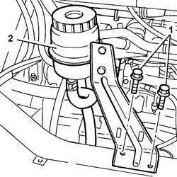
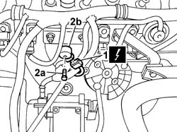

5510C44 KNOCK SENSOR (ONE) - R+R
- Path
- Procedures > 55 ELECTRICAL EQUIPMENT > 5510 ENGINE IGNITION > 5510C COIL, ECU, SENSORS > 5510C44 KNOCK SENSOR (ONE) - R+R
- Kind
- repair procedure (removal / refitting; the operation number is the code)
- Applies to
- engines: 2.0 16V; all production periods
- Interactive page
- https://sloeber94.github.io/elrnDB-fDct/en/#/244001346
Applies to: engines: 2.0 16V; all production periods
 Removing
Removing
 Refitting
Refitting- Disconnect the negative battery terminal.
Op. 5530A50 ALTERNATOR GUARD - R & R.
1. Undo the bolts securing the power steering fluid reservoir bracket.
2. Remove the power assisted steering fluid reservoir complete with bracket.

Applies to: engines: 2.0 16V; all production periods
1. Disconnect the electrical connection for the knock sensor.
2. Undo retaining bolt (2a) and remove the knock sensor (2b).

Applies to: engines: 2.0 16V; all production periods
Refitting
Removing- Fit the knock sensor in the housing.
- Tighten the retaining bolt.
- Connect the electrical connection for the knock sensor.
- Fit the power steering fluid reservoir
- Tighten the bolts securing the power assisted steering fluid reservoir mounting bracket.
Op. 5530A50 ALTERNATOR GUARD - R & R.
- Connect the negative battery terminal.